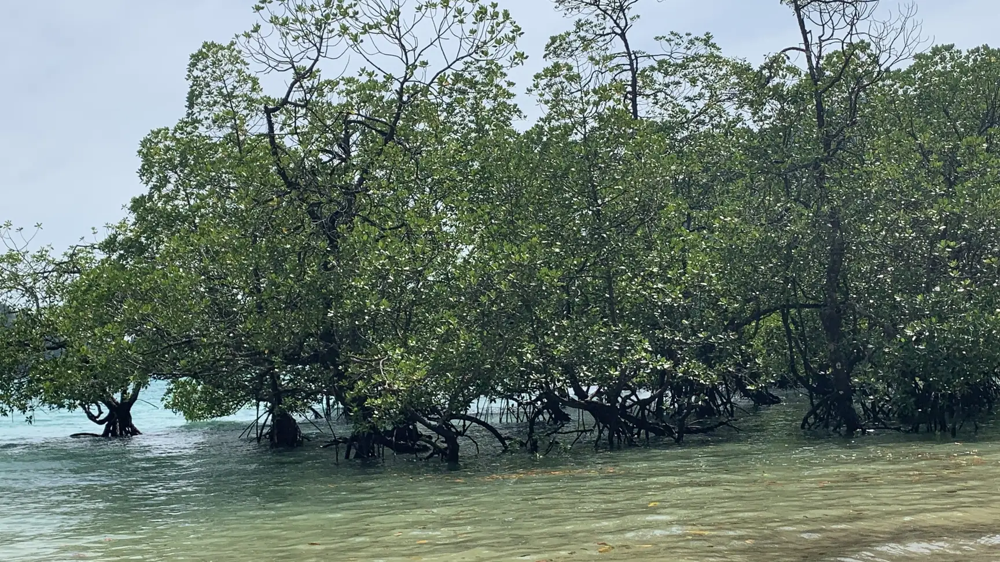
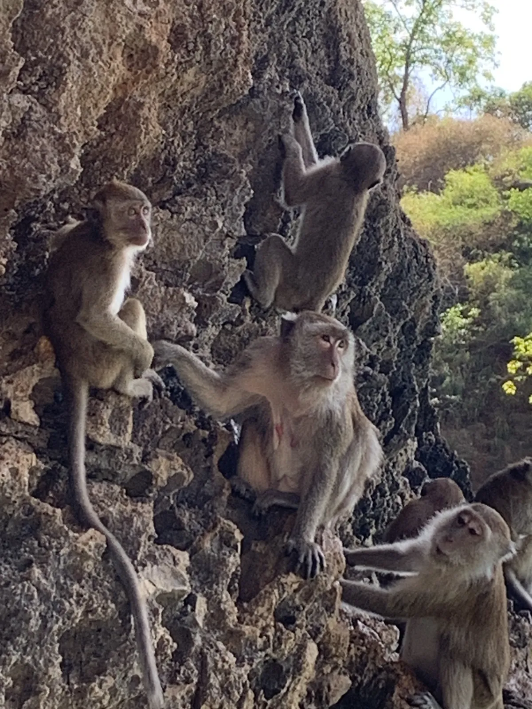
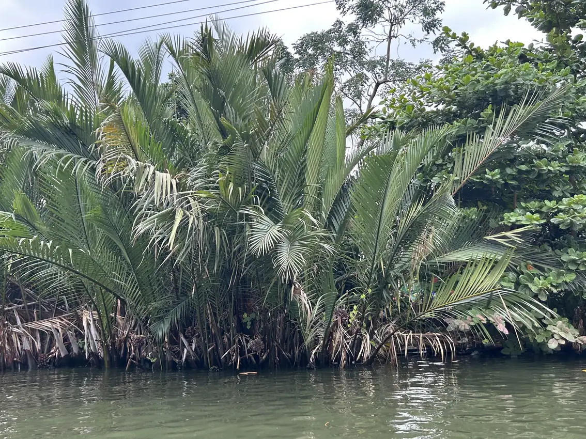
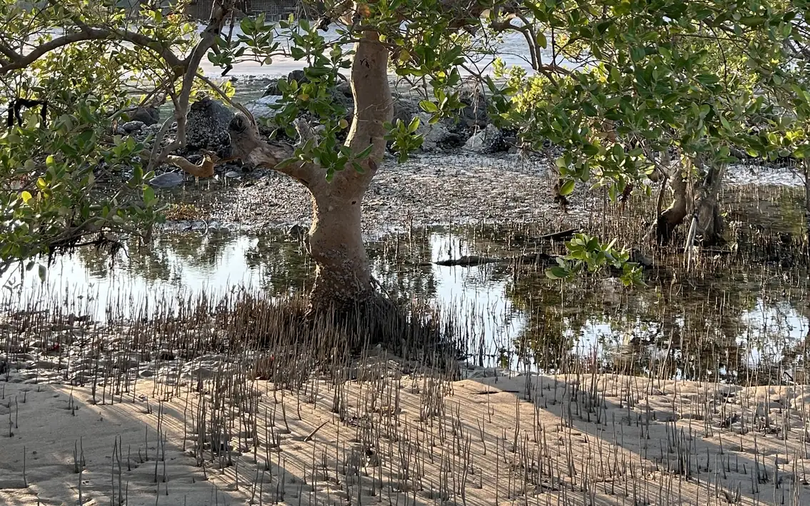
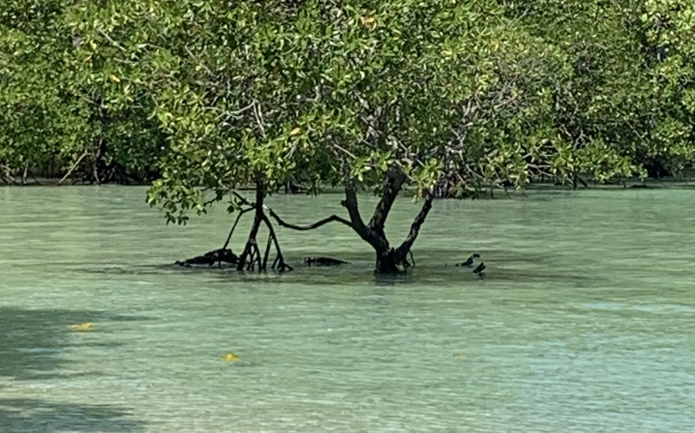
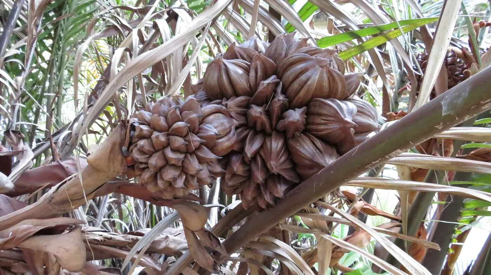
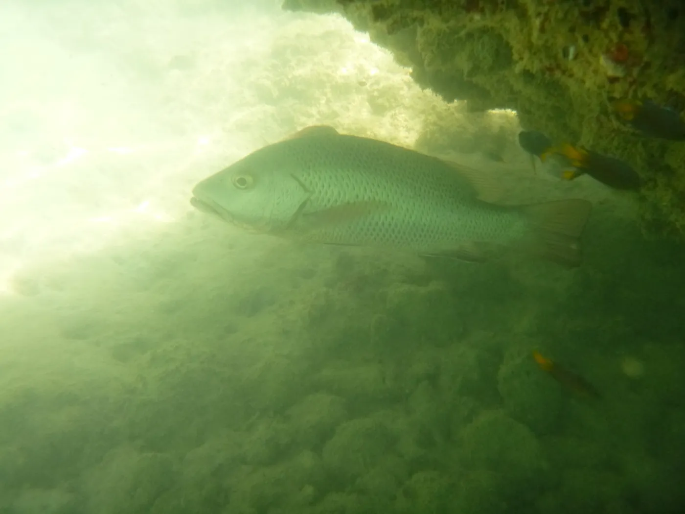
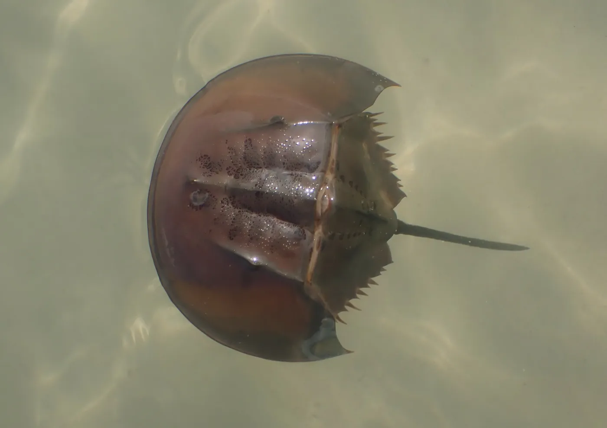
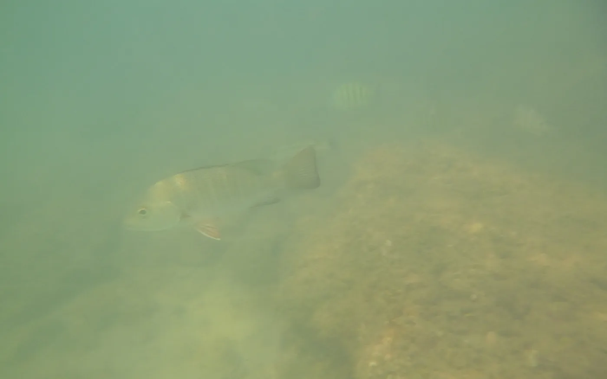

ป่าชายเลน
ของไทย · Thai mangrove forests
ต้นไม้ที่ยืนอยู่ในน้ำเค็ม รากโผล่พ้นเลน
ป่าแบบนี้ รอด ได้อย่างไร?
- 1ใครอยู่ในป่าชายเลน
- 2หาให้เจอในภาพ
- 3ใครผลิต ใครกิน
- 4ป่าที่หายไป

01ลิงแสม

02ต้นจาก

03แสม
ภาพใหญ่: ป่าโกงกางยืนอยู่ในน้ำทะเล ประเทศไทย · iNaturalist / Wikimedia Commons · CC0 · แตะภาพใดก็ได้เพื่อดูเต็มจอ
ใครอยู่ ในป่าชายเลน
ป่าเดียว มีบ้านสามชั้น
แตะภาพเพื่อดูเต็มจอ

02รากค้ำยันในน้ำ
03ผลจากบนต้นไม้
04ปลากะพงแดงในน้ำ
07แมงดาถ้วยในน้ำ
08ปลากะพงแดงในน้ำแตะให้ถูก จุดในภาพ
พบแล้ว
ใครสร้างอาหารเอง ใครต้องกิน
ลากภาพลงกล่องที่ถูก
หรือแตะภาพ แล้วแตะกล่อง
ป่าที่หายไป และเหตุที่ต้องรักษา
ลากที่ภาพเพื่อเทียบ · ป่าโกงกางตอนน้ำขึ้น ประเทศไทย ซ้ายคือภาพจริง ขวาคือภาพเดียวกันที่ระบายชั้นของป่า · ภาพ: iNaturalist / Wikimedia Commons (CC0)
ป่าชายเลนของไทย
ลดลงเกินครึ่งใน 35 ปี
สาเหตุหลัก: เปลี่ยนเป็นนากุ้ง ตัดไม้เผาถ่าน และขยายเมือง ปัจจุบันมีการปลูกฟื้นฟูทั่วประเทศ
ที่มาของภาพทั้งหมด
- ป่าโกงกางยืนอยู่ในน้ำทะเล ประเทศไทย · iNaturalist / Wikimedia Commons · CC0
- โกงกางกับรากค้ำยันเหนือน้ำ ประเทศไทย · iNaturalist / Wikimedia Commons · CC0
- ต้นจาก ปาล์มของป่าชายเลนน้ำกร่อย ประเทศไทย · iNaturalist / Wikimedia Commons · CC0
- ทะลายผลจาก ประเทศไทย · iNaturalist / Wikimedia Commons · CC0
- ปลากะพงแดง ลูกปลาโตในป่าชายเลน ประเทศไทย · iNaturalist / Wikimedia Commons · CC0
- ปลากะพงแดงในน้ำขุ่น ประเทศไทย · iNaturalist / Wikimedia Commons · CC0
- แมงดาถ้วย สัตว์โบราณของป่าชายเลน · iNaturalist / Wikimedia Commons · CC0
- แสม มีรากหายใจโผล่ขึ้นจากเลน (ภาพจากรัฐยะไข่ เมียนมา) · iNaturalist / Wikimedia Commons · CC0
- ลิงแสม หากินตามโขดหินและป่าชายเลน · iNaturalist / Wikimedia Commons · CC0
ตัวเลขพื้นที่ป่าชายเลน: กรมป่าไม้ (สำรวจจากภาพถ่ายดาวเทียม) · ภาพทุกภาพเป็นสาธารณสมบัติหรือ CC0 · รายชื่อไฟล์และหน้าที่มา: CREDITS.md